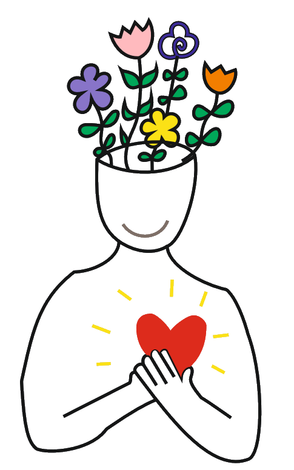

Nazywam się Patrycja Wojciechowska-Wachuła — jestem psychologiem oraz pedagogiem społecznym. W pracy psychologicznej towarzyszę zarówno dorosłym, jak i młodzieży od 13 roku życia. Wiem, jak ważne jest, aby młodzi ludzie mieli przestrzeń, w której mogą mówić o swoich emocjach bez obaw o ocenę. Od wielu lat wspieram osoby znajdujące się w trudnych sytuacjach życiowych i zawodowych. Staram się, by każde spotkanie było bezpiecznym miejscem rozmowy, zrozumienia i budowania poczucia własnej wartości.
Ukończyłam studia magisterskie na kierunku psychologia kliniczna i osobowości oraz neuropsychologia w Wyższej Szkole Biznesu – National-Louis University w Nowym Sączu. Doświadczenie zdobywałam m.in. w Wojewódzkim Zespole Lecznictwa Psychiatrycznego w Olsztynie, gdzie obserwowałam i wspierałam osoby zmagające się z różnymi problemami emocjonalnymi i psychicznymi.
W pracy kieruję się empatią, autentycznością i zrozumieniem. Wierzę, że każda rozmowa może być początkiem zmiany – niezależnie od wieku.
Diagnoza psychologiczna
Diagnoza psychologiczna to proces, który pozwala lepiej zrozumieć funkcjonowanie emocjonalne, poznawcze i społeczne człowieka. To nie tylko testy i wyniki – to także rozmowa, obserwacja i wspólne poszukiwanie przyczyn trudności, z którymi dana osoba się mierzy. Celem diagnozy jest uzyskanie pełniejszego obrazu sposobu myślenia, odczuwania i reagowania, a także wskazanie obszarów, które wymagają wsparcia lub dalszej pracy.Diagnoza neuropsychologiczna
Diagnoza neuropsychologiczna pozwala ocenić funkcjonowanie poznawcze, czyli m.in. pamięć, uwagę, koncentrację, język, funkcje wykonawcze i tempo przetwarzania informacji. Jest szczególnie przydatna w przypadku:Pierwsze spotkanie ma charakter rozmowy.
W spokojnej atmosferze przyglądamy się temu, co jest dla Ciebie trudne – bez pośpiechu i oceniania.
Wspólnie ustalamy cele i sposób dalszej pracy.
Spotkania odbywają się w przyjaznej, kameralnej przestrzeni, w której najważniejsza jest Twoja wygoda i poczucie bezpieczeństwa.
Patrycja Wojciechowska-Wachuła
Olsztyn
ul. Wyszyńskiego 5b
Pokój 214 (II piętro)
Telefon:
503 685 327
Email:
kontakt@psychologiazsercem.pl
nr konta do przelewu:
85 1160 2202 0000 0000 5584 4308